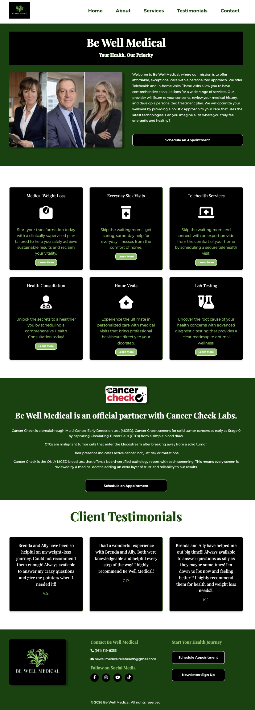
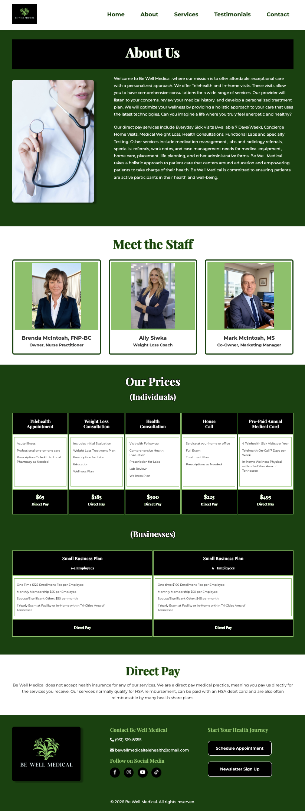
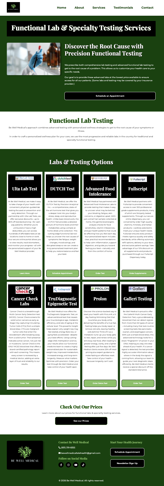
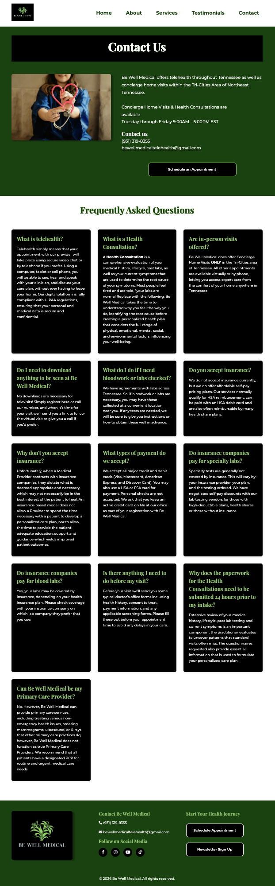

The Be Well Medical Website project was coded using HTML+CSS and JavaScript. The website features a clean and modern design, with a focus on user experience and accessibility. The project included the implementation of responsive design techniques to ensure the website looks great on all devices. The Be Well Medical Website project demonstrates my ability to create functional and visually appealing websites that meet client requirements and provide a positive user experience.



